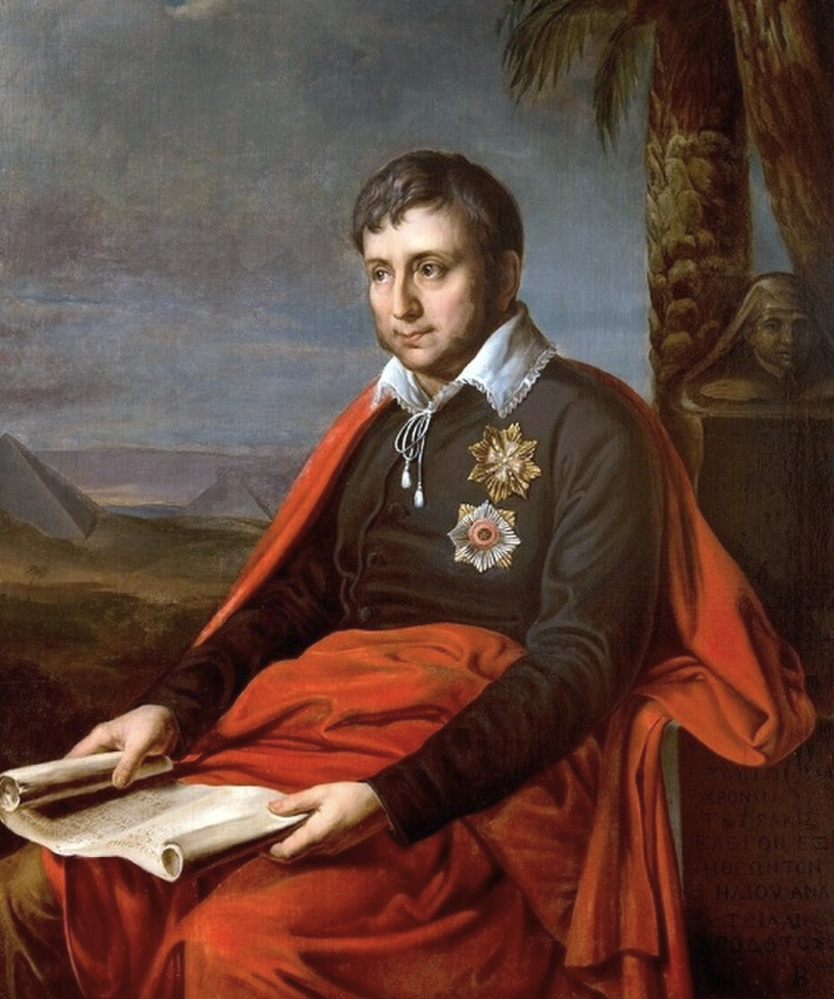
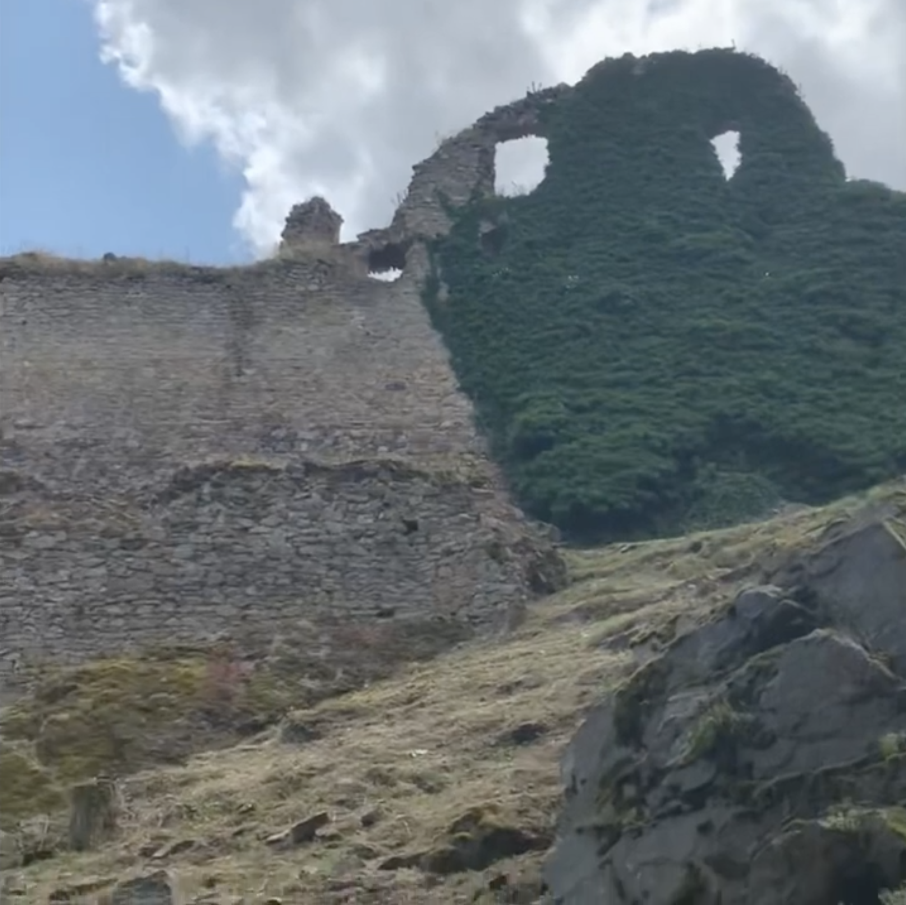
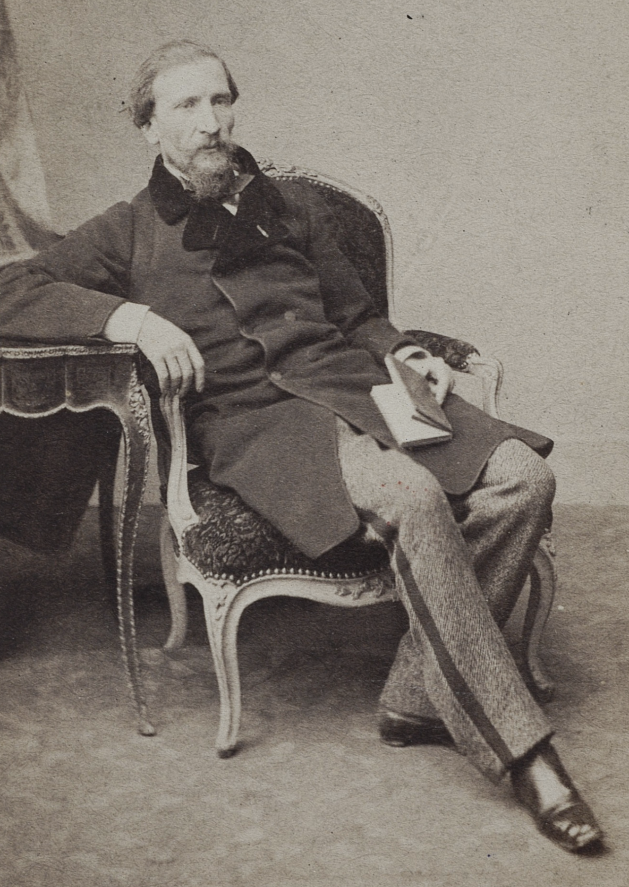
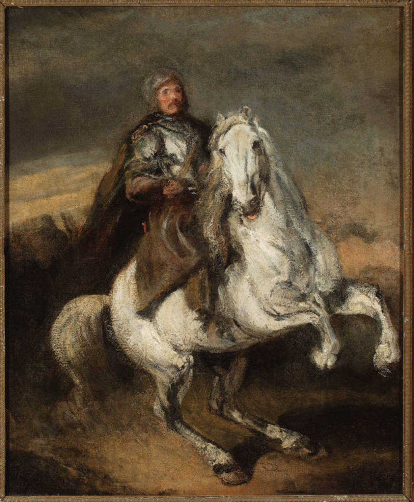
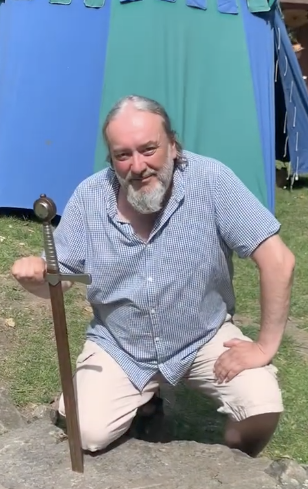

Petr Motýl - Dobrodružství Alfonse van Worden
Dobrodružství Alfonse van Worden

Vydalo nakladatelství Malvern v roce 2023. https://www.malvern.cz/

Obálka prvního vydání Rukopisu nalezeného v Zaragoze. Biblioteka Narodowa / Public domain / Wikimedia Commons
Jan Potocki (1761-1815) Wikipedia
Rukopis nalezený v Zaragoze Wikipedia
Anotace
Próza s různými rovinami, ze kterých pro současnost je zřejmě nejvíc přitažlivá ta fantastická, blízká současnému žánru fantasy. Rytíři, nadpřirozené bytosti, upíři, propadání se do jiných světů. Text plný napětí má i svůj svébytný humor.

Voják valonské gardy, jejíž stejnokroj má v Madridu přijmout hlavní postava knížky, Alfons van Worden. Public domain / Wikimedia Commons
Ukázka
Nyní jsem šibenici, o které si vyprávěli v kordóbské hospodě, měl přímo před sebou. Vítr lomcoval mrtvolami a supi z nich rvali vnitřnosti a škubali maso. Byla to příšerná podívaná. Zastavil jsem koně. Tu se zpoza jedné ze skal vynořila ženská postava v bílém šatu, s dlouhými, oslnivě plavými vlasy, které jí zakrývaly obličej. Stál jsem jako strnulý. Postava se vyhoupla na plot z klád, který ohrazoval šibenici, a odhrnula si vlasy z tváře. Byla nebesky krásná.
„Tady štěstí nenajdeš! Obrať koně! Tady štěstí nenajdeš!“ zvolala směrem ke mně. Seskočila z ohrady, a jako kdyby ji blesk přenesl vysoko do příkré stráně. Zmizela ve skalách.
Odvrátil jsem oči, nedal jsem najevo strach, ač mnou hrůza zachvívala, a pokračoval jsem v cestě. Obklopily mě strmé kamenité stráně, ze kterých vyrůstaly skupiny skal. Opravdu krásné úkryty pro lupiče. Připravil jsem své dvě pistole k výstřelu. Vysoko nad kamenitou cestou se tu a tam ukazovaly černé chřtány vchodů do jeskyní. Nerostl tu jediný strom.
Na konci údolí mě měla čekat hospoda Venta Quemada, ve které jsem doufal najít jídlo a nocleh. Po hodině jízdy jsem ten hostinec choulící se ke skále z dálky spatřil a přestal jsem si dělat zbytečné naděje na večeři. Z komína nestoupal kouř, štěkot psa neoznamoval můj příjezd. Bylo to tak, jak říkal nejužvaněnější statkář z celé Andalusie, hostinští opustili tento kraj.
Čím víc jsem se k hospodě blížil, tím se stávalo zdejší ticho tíživějším. Konečně jsem dorazil na místo. U dveří byl výklenek s miskou na almužny a nápis:
„Vážení pocestní, vzpomeňte v modlitbě na duši Fernandéze z Murcie, syna Estébana z Murcie. Můj otec koupil tento hostinec od hraběte Quemady a učinil z něj blahé místo pro poutníky.Se vším je konec! Zapřísahám vás, varujte se strávit tu noc!“
Nápis ve mně jen povzbudil úmysl směle se postavit jakémukoliv nebezpečí, které mě tu mohlo očekávat. Nechtěl jsem se tu ovšem přesvědčovat o existenci duchů, ale prokázat svou čest. Jak celé moje vyprávění ukáže, vždy a všude jsem se choval jako šlechtic. Čest ovšem urozenému muži přikazuje nikdy nedat najevo strach. Varoval-li mě tedy nápis před nocí v hostinci, nezbývalo mi než prokázat, že jsem hoden svého rodového jména a svého vychování, a přespat tu.
Ve dvoře hostince jsem našel stáj. Byla prázdná, ale žlaby měla plné sena. Zavedl jsem koně do stání a uvázal ho. V posledních paprscích zapadajícího slunce jsem si prohlédl vnitřek hospody. Nemyslel jsem na to, kam bych se mohl v noci schovat před strašidly, ani na to, co použít proti pekelným mocnostem, pokoušel jsem se najít něco k snědku, od snídaně jsem nic nejedl.
Hospoda přilepená ke skále, která zvenčí vyhlížela zpustle, byla uvnitř pěkně upravená. Stěny v pokojích byly čistě vybílené, v sále určeném k jídlu a pití byly stěny pokryté mozaikami a dřevěný strop byl ozdoben překrásně vyřezávaným ornamentem. Prošel jsem kuchyni, půdu i sklepy vyhloubené ve skále, ze kterých vedly chodby kdovíkam do podzemí. Nic, co by mohlo utišit můj hladový žaludek, jsem ale nenašel. Odebral jsem se tedy do jednoho z pokojů. Postel byla ubohá, našel jsem v ní ale polštář, povlečený slamník i přikrývku. Pokoušel jsem se usnout, leč marně.
Čím více noc tmavla, tím temnější myšlenky na mě přicházely. Z podlahy a z postele vyrůstali lupiči a odvlékali mé sloužící Lopéze a Moskíta. Na mě se báli vztáhnout ruku, odrazovala je má mužná postava vojáka. Prázdný žaludek se mi kroutil. Zkoušel jsem si představit kozy na pastvě, pastýře a mléko a chléb v jeho chýši. Lovil jsem zvěř. Usínal jsem a probouzel jsem se. Ale ani v nejhorším snu jsem se nevracel zpátky do Andújaru, k nejužvaněnějšímu statkáři z celé Andalusie, znova a znova jsem se vydával v sedle do Sierry Moreny.
Když už všechny představy polospánku o lupičích, pastýřích a zvěři zmlkly, vynořil se a vtíral se mi příběh o penězokazcích a další dobrodružné historky, které věrně doprovázely čas mého dětství. A znovu a znovu se mi vracel nápis nad miskou na almužny před hospodou. Nepřipouštěl jsem si, že to byl ďábel, kdo by si odnesl duši Fernandéze z Murcie, ale věděli jsem, že hostinský odsud neodešel v pokoji.
V hlubokém tichu míjela hodina za hodinou. A tu zvon odbil dvanáct úderů. Jak známo, zlí duchové se ujímají vlády o půlnoci a jejich moc končí s prvním zakokrháním kohouta. A ten zvon? Předtím hodiny neodbíjel, a teď jeho hrobový zvuk. Dveře do pokoje se otevřely a vešla černá postava. Strašidlo? Ne, byla to polonahá černoška s pochodněmi v obou rukou.

Francesco Goya (1746-1828) Caprichos. No known copyright restrictions / Wikimedia Commons
DOSLOV PETRA MOTÝLA
Proč není přeložena celá kniha?
Hrabě Jan Potocki (1761–1815) a jeho Rukopis nalezený v Zaragoze zavítali ke čtenáři našinci poprvé v r. 1973 v překladu Jaroslava Simonidese (1915–1996). Takřka padesát let starý překlad se rozhodlo v r. 2022 reeditovat nakladatelství Academia, ale nakonec, když magnáti Potočtí knize nepřispěchali vstříc svými dukáty a dublony, od svého úmyslu odstoupilo.

Portrét autora Rukopisu nalezeného v Zaragoze hraběte Jana Potockého (1761 – 1815), počátek 19. st. Public domain / Wikimedia Commons
O překladu Rukopisu nalezeného v Zaragoze jsem už dlouho uvažoval, stále jsem to odkládal, až nakonec ohlášené vydání v Academii mě přinutilo usednout k této výjimečné klasice polské literatury. Přece si to nenechám ujít! Když to mohou vydat oni, tak to já vydám taky! Tehdy jsem netušil, zda v Academii chtějí tisknout nějaký nový překlad, nebo bezmála půlstoletí staré převedení do češtiny Jaroslava Simonidese. Každopádně jsem si ale říkal: nač vlastně překlad dvojit? Proč by měly vyjít dva překlady téhož současně? A tak jsem se rozhodl přeložit jen zhruba první pětinu knihy, k čemuž jsem epilog zkompiloval ze závěru mnohasetstránkového textu a závěr jsem též doplnil vlastní básnickou fikcí, tak aby byl dokončen a zaokrouhlen příběh Alfonse van Worden.

Na hradě © archiv překladatele
Z knížek bližších mladší generaci čtenářů je dobrým příkladem, který souzní s úvodním příběhem a následně dalším pokračováním Rukopisu nalezeného v Zaragoze, i když se tu o „autora jedné knihy“ samozřejmě nejedná, Tolkienův Hobit a Pán prstenů. Začátek Rukopisu nalezeného v Zaragoze má s Hobitem řadu společných rysů, ne-hrdina ve věku čerstvé dospělosti, ještě s čistou chlapeckou duší, se tu velmi obdobně vydává na nečekanou cestu, na které se setkává s něčím pro něj do té doby zcela neznámým, s něčím, co nepatří do poklidného světa, ve kterém vyrostl.

Sierra Morena ve Španělsku, pohoří, v němž se odehrává velká část Dobrodružství Alfonse van Worden. © Luis Fernández Fuster / CC BY-SA 2.0 / Wikimedia Commons
U mnohem kratšího Dobrodružství Alfonse van Worden ovšemže nejde o protiklad literárně výjimečného rozsáhlého textu a jeho kostrbatého a jako by odbytého konce. Ostré kontury tohoto rozporu v kratším textu tolik nebolí. Navíc jsem se v epilogu některé nepříjemné hrany pokusil uhladit, i když to šlo ztěžka. A zcela proti tomu „co je psáno, to je dáno“ jsem jít nechtěl. I tak to ode mne nebylo zcela seriózní, ale bylo to básnické. A v duchu Alfonse van Worden jsem jednal podle všech zásad básnické cti, podle kodexu, jehož pravidla urozenému rytíři pera přikazují pokleknout kromě Panny Marie jen před jedinou královnou: před poezií.

Sierra Morena ve Španělsku. © Rijksmuseum / CC0 Public Domain / Wikimedia Commons

Z výstavy „Snění o kamenech“ v Pařížské škole šperkařských umění, sbírka Rogera Cailloise. © Chatsam / CC BY-SA 4.0 / Wikimedia Commons

Edmund Chojecki (1822-1899), překladatel a vydavatel. Public domain / Wikimedia Commons

Sierra Morena ve Španělsku. © Gustave Doré / CC BY 2.0 / Wikimedia Commons

Piotr Michałowski (1800-1855), Šlechtic na šedákovi. Public domain / Wikimedia Commons

© archiv překladatele
© Petr Motýl / design Zebry